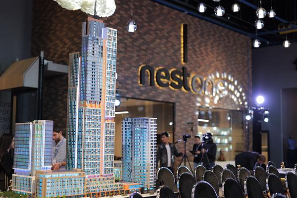
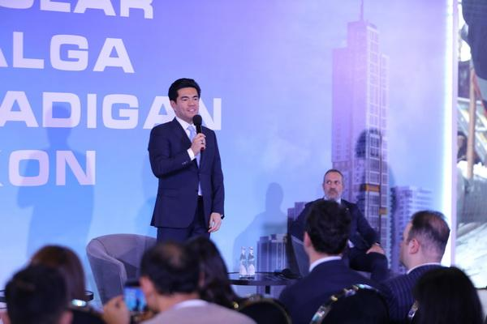

Email: info@muradbuildings.com
Phone: +998 71 200 88 22
Address: 38а Oybek ko'chasi, Тоshkent 100015
Working hours: from 8:00 to 20:00
Construction of the first multifunctional complex in Uzbekistan - Nest One - was completed in Tashkent. The height of the skyscraper is 267 meters. Construction of Nest One began in September 2019. The project was implemented by Murad Buildings and Özgüven.
Murad Nazarov, founder and director of Murad Buildings, noted that the implementation of this project was not easy, but with the help of partners and clients themselves, the project was successfully completed, and also noted that company representatives have already begun issuing keys and cadastral documents to owners of apartments, office and retail premises.
Ozgur Onur Ozguven, founder of the Özgüven company, said that in 2019 the project seemed like a dream, but today this dream has become a reality. He thanked everyone who took part in its implementation.
According to him, the Özgüven came to Uzbekistan to share its knowledge and experience. He noted that at the beginning of the project, about 1,000 specialists from Turkiye worked in Uzbekistan. Gradually their number was reduced to 200 people, as Turkish specialists trained local builders.
The complex is conceived as a separate ecosystem that unites premium apartments with a gorgeous view of the city, offices and 33 public spaces: shops, restaurants, children’s playgrounds, a winter garden, areas for recreation and sports.
For the powerful foundation of the building, a special Barret system was used, which was first used in Uzbekistan. The project passed earthquake tests.
Email: info@muradbuildings.com
Phone: +998 71 200 88 22
Address: 38а Oybek ko'chasi, Тоshkent 100015
Working hours: from 8:00 to 20:00